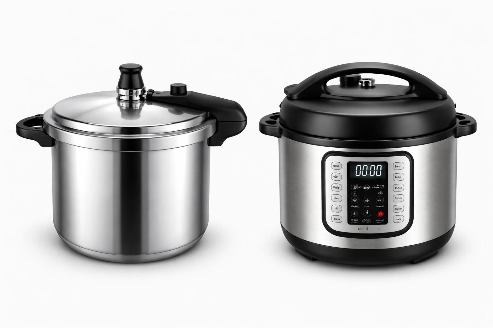

Panci Presto: Manfaat, Bahaya, dan Alternatifnya.

Apakah Anda pernah ingin bisa memasak daging yang super empuk hanya dalam waktu singkat? Jika iya, panci presto (pressure cooker) akan menjadi andalan di dapur Anda.
Alat masak ini memang terkenal bisa memangkas waktu memasak hingga 70%. Namun, di balik kepraktisannya, ada hal-hal yang ditakutkan pada panci presto ini.
Lalu, apa saja sebenarnya manfaatnya, resiko-resiko bahayanya, dan alternatif lain yang semacam panci presto ini? Mari kita bahas tuntas!
1. Manfaat Panci Presto (Mengapa Orang Suka Memakainya?)
Panci presto bekerja dengan prinsip sederhana: yaitu menaikkan titik didih air dengan menahan uap di dalam panci. Berikut adalah beberapa keuntungannya:
Hemat Waktu dan Energi:
Ini adalah kelebihan utama. Memasak daging hingga empuk biasanya membutuhkan waktu hingga 2-3 jam menggunakan panci biasa, namun bisa diselesaikan hanya dalam 30-45 menit dengan panci presto. Hal ini tentu menghemat gas atau listrik.
Menjaga Nutrisi Makanan:
Karena waktu memasak sangat singkat dan tertutup rapat, vitamin dan mineral dalam makanan (terutama sayuran) tidak banyak yang hilang terbuang bersama uap air. Bandingkan dengan merebus sayur di panci terbuka yang membuat vitamin larut ke air dan menguap.
Rasa Lebih Meresap dan Tekstur Lebih Empuk:
Tekanan tinggi membuat bumbu meresap ke dalam serat daging dengan lebih cepat. Tekstur makanan pun menjadi sangat empuk, bahkan tulang muda pun bisa menjadi lunak (bone broth).
Menghemat Uang:
Dengan panci presto, Anda bisa membeli potongan daging yang lebih keras dan murah (seperti sandung lamur atau tetelan), lalu mengolahnya menjadi empuk tanpa waktu lama.
2. Bahaya dan Resiko Panci Presto (Kenapa Orang Takut?)
Meskipun bermanfaat, panci presto seperti pisau bermata dua. Jika tidak digunakan dengan benar, resikonya cukup fatal.
⚠️
Resiko Meledak (Over Pressure):Ini adalah hal yang paling dikhawatirkan. Ledakan biasanya terjadi karena ventilasi uap (lubang angin) tersumbat, atau katup pengaman (peluit) rusak.
Luka Karena Uap Panas:
Bahaya yang paling sering terjadi sebenarnya bukan ledakan, melainkan luka karena uap panas. Uap panas bertekanan tinggi yang keluar saat membuka tutup bisa menyebabkan luka panas berderajat tinggi jika tidak berhati-hati.
Resiko Gosong:
Jika air terlalu sedikit, makanan bisa gosong atau kering total di bagian bawah. Ini merusak cita rasa, nutrisi, dan merusak kualitas panci itu sendiri.
Resiko Bahan Kimia (Khusus Presto Aluminium):
Beberapa panci presto berbahan dasar aluminium bereaksi dengan makanan asam (seperti tomat atau cuka), yang mana dalam jangka panjang kurang baik untuk kesehatan.
3. Tips Aman Menggunakan Panci Presto
Agar bisa menikmati manfaat tanpa resiko, ikuti aturan berikut ini:
📌
- Cek Sebelum Pakai: Pastikan karet (gasket) masih elastis/tidak keras, dan pastikan lubang angin tidak tersumbat.
- Jangan Diisi Penuh: Isi panci maksimal 2/3 dari kapasitasnya. Jika memasak makanan yang mengembang (seperti kacang-kacangan), isi hanya 1/2 bagian.
- Pakai Api Kecil: Setelah presto mendesis (berbunyi), kecilkan api. Api besar tidak membuat makanan lebih cepat matang, hanya membuat tekanan berlebih.
- Cara Membuka Tutup: Jangan langsung membukanya saat waktunya matang. Matikan api, biarkan uap keluar sendiri hingga penunjuk tekanan turun. Siram tutup dengan air dingin (untuk jenis tertentu) agar tekanan turun, tapi jangan langsung disiram saat api baru dimatikan.
- Masak dengan panci presto harus selalu fokus, dan tidak ditinggalkan, namun boleh jaga jarak yang aman. Pasang timer alarm di HP jika perlu.
4. Alternatif Panci Presto (Jika Anda Masih Takut)
Jika Anda tidak ingin repot memikirkan tekanan dan resiko ledakan, ada alternatif lain yang lebih aman namun tetap efektif:

📌
Slow Cooker (Magic Com Dapur):Cocok untuk Anda yang tidak terburu-buru. Cukup masukkan bahan, nyalakan 'cook', dan bisa ditinggal bekerja. Saat pulang, daging sudah empuk dan bumbu meresap sempurna. Resikonya sangat minim.
Panci Biasa dengan Teknik "Braising":
Masak dengan api kecil dalam panci tertutup dalam waktu lama. Memang butuh waktu lebih lama, tapi Anda bisa mengontrol tekstur dan kuah dengan lebih mudah.
Dutch Oven (Panci Besi Cor):
Panci besi cor yang tebal ini sangat bagus menahan panas. Dipakai di oven atau kompor, makanan bisa empuk merata tanpa tekanan tinggi.
Panci Presto Modern (Electric Pressure Cooker):
Ini solusi terbaik. Contohnya adalah Instant Pot atau Digital Pressure Cooker. Alat ini memiliki sensor otomatis yang akan mematikan listrik jika tekanan terlalu tinggi. Sangat aman dan tidak bisa meledak seperti presto manual kompor.
Panci presto adalah alat masak yang luar biasa efisien untuk dapur modern. Manfaatnya menghemat waktu dan menjaga nutrisi sangatlah nyata. Namun, keselamatan adalah kunci.
Jika Anda menggunakan presto manual klasik, pastikan Anda rajin merawatnya dan patuh pada prosedur keamanan. Namun, jika Anda ingin ketenangan hati, beralih ke Panci Presto Elektrik/Modern atau Slow Cooker adalah pilihan yang tepat untuk dapur keluarga.
---